FIND YOURSELF · INDEPENDENT VALIDATION
v18：売場と、43人の買い物客
代表8店舗の内装を業種別に再構成し、少人数の利用風景を検証しました。全館の完成版ではありません。まずNPCなし／あり、次にv17／v18を同じGodot視点で比較してください。
ゲーム本体へ未統合。F4・F6・水上庭園・RF-SUPPORT-16は未承認。人間の手動操作、Windows GPU性能は未検証です。
NPCなし／あり
43人＝A14 / B15 / C14。歩行15・着席10・商品閲覧6・会話6・催事4・案内閲覧2。20秒の実物理状態を固定して撮影。F12で人物の描画・衝突・更新を切り替えられます。
A館1F 長い専門店街
人物造形と動きは試験品質です。座席・閲覧先・会話相手を割り当てています。
実Godot Viewport / 1920×1080 / 同じ視点。スライダー左側がNPCあり。A館 西広場の案内と休憩
人物造形と動きは試験品質です。座席・閲覧先・会話相手を割り当てています。
実Godot Viewport / 1920×1080 / 同じ視点。スライダー左側がNPCあり。B館 時の広場・あいち催事

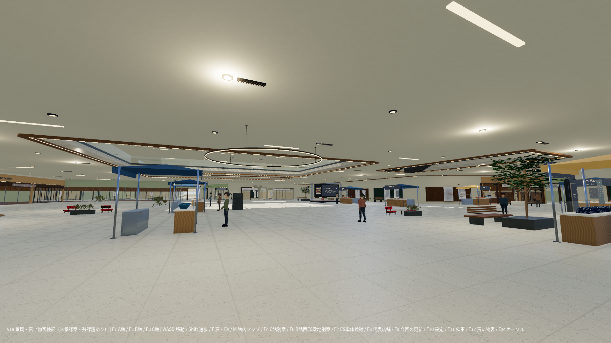
人物造形と動きは試験品質です。座席・閲覧先・会話相手を割り当てています。
実Godot Viewport / 1920×1080 / 同じ視点。スライダー左側がNPCあり。B館 食と手しごとの屋台
人物造形と動きは試験品質です。座席・閲覧先・会話相手を割り当てています。
実Godot Viewport / 1920×1080 / 同じ視点。スライダー左側がNPCあり。B館1F 時の広場・ベンチと会話
人物造形と動きは試験品質です。座席・閲覧先・会話相手を割り当てています。
実Godot Viewport / 1920×1080 / 同じ視点。スライダー左側がNPCあり。C館 中庭・屋外動線

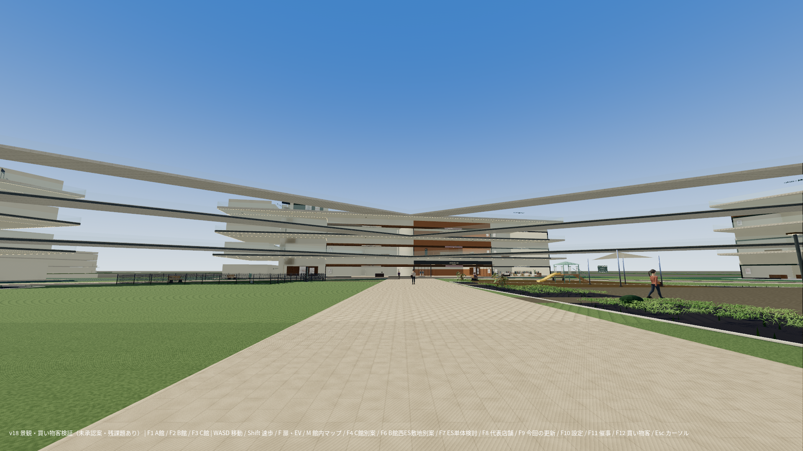
人物造形と動きは試験品質です。座席・閲覧先・会話相手を割り当てています。
実Godot Viewport / 1920×1080 / 同じ視点。スライダー左側がNPCあり。C館 こもれび遊び場
人物造形と動きは試験品質です。座席・閲覧先・会話相手を割り当てています。
実Godot Viewport / 1920×1080 / 同じ視点。スライダー左側がNPCあり。C館 二重ゲート・ドッグラン
人物造形と動きは試験品質です。座席・閲覧先・会話相手を割り当てています。
実Godot Viewport / 1920×1080 / 同じ視点。スライダー左側がNPCあり。C館 焼きたてメロンパン
人物造形と動きは試験品質です。座席・閲覧先・会話相手を割り当てています。
実Godot Viewport / 1920×1080 / 同じ視点。スライダー左側がNPCあり。C館1F カフェ・会話と客席
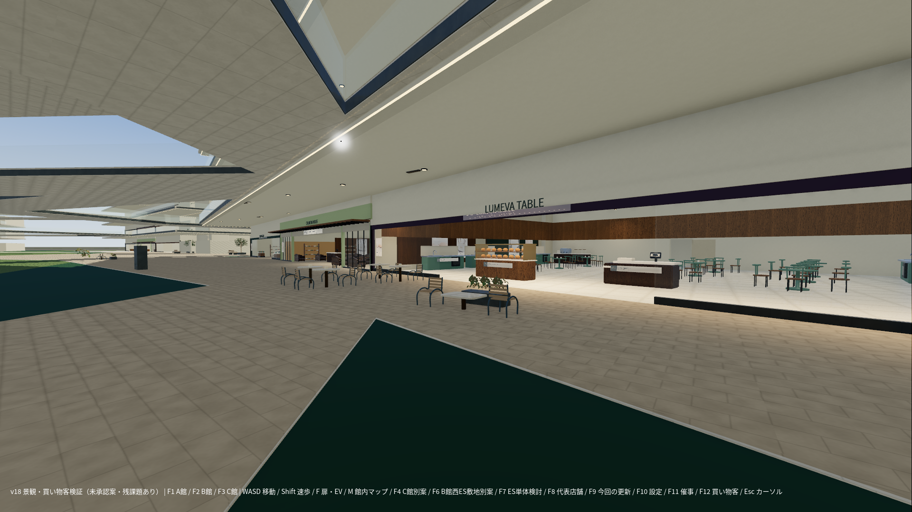
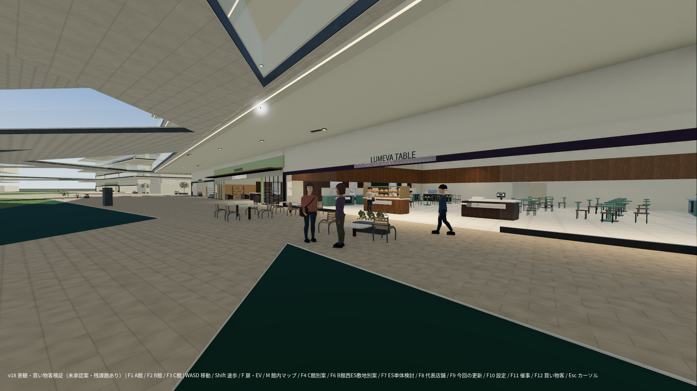
人物造形と動きは試験品質です。座席・閲覧先・会話相手を割り当てています。
実Godot Viewport / 1920×1080 / 同じ視点。スライダー左側がNPCあり。代表8店舗：v17／v18
旧什器を重ねずに置き換え、入口展示・中央売場・壁面売場・会計を区別しました。店舗区画・入口・バックヤードは維持。商品図柄の反復や売場密度は引き続き改善が必要です。
代表店舗の素材確認
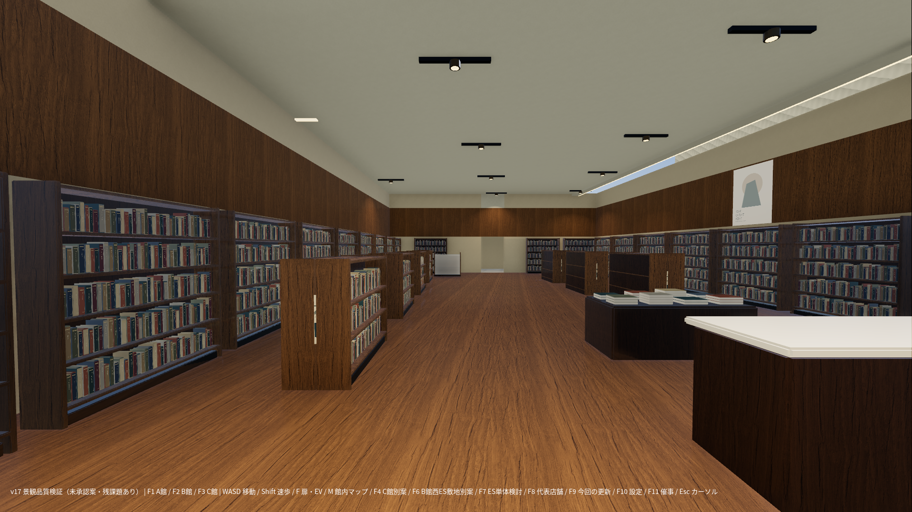
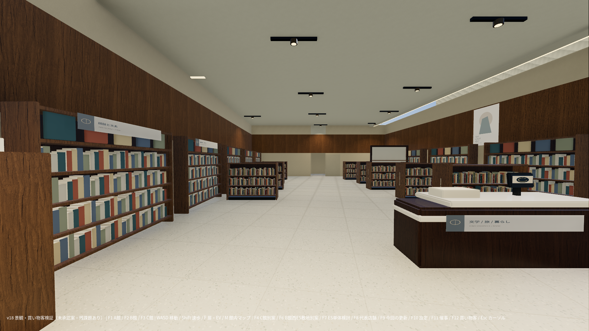
元の売場形状と主動線を維持。内装の全面更新はこの8店が対象です。
実Godot Viewport / 1920×1080 / 同じ視点。スライダー左側がv18。A館1F 雑貨・器の売場
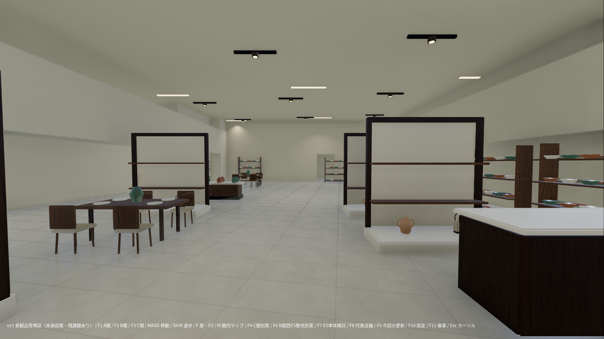

元の売場形状と主動線を維持。内装の全面更新はこの8店が対象です。
実Godot Viewport / 1920×1080 / 同じ視点。スライダー左側がv18。代表店舗の素材確認
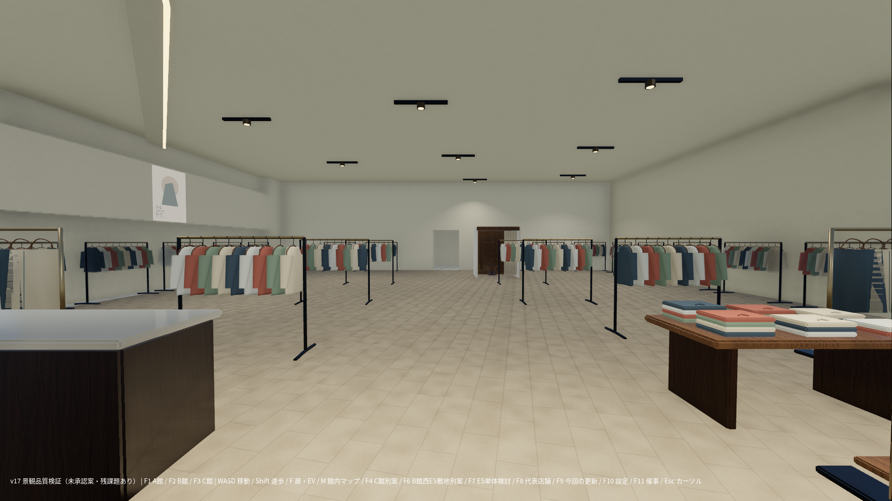

元の売場形状と主動線を維持。内装の全面更新はこの8店が対象です。
実Godot Viewport / 1920×1080 / 同じ視点。スライダー左側がv18。B1-030 beauty_tester_bar
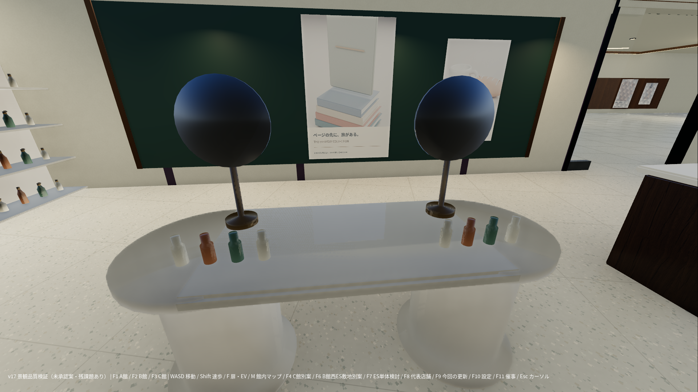

元の売場形状と主動線を維持。内装の全面更新はこの8店が対象です。
実Godot Viewport / 1920×1080 / 同じ視点。スライダー左側がv18。B1-N03 electronics_media_demo

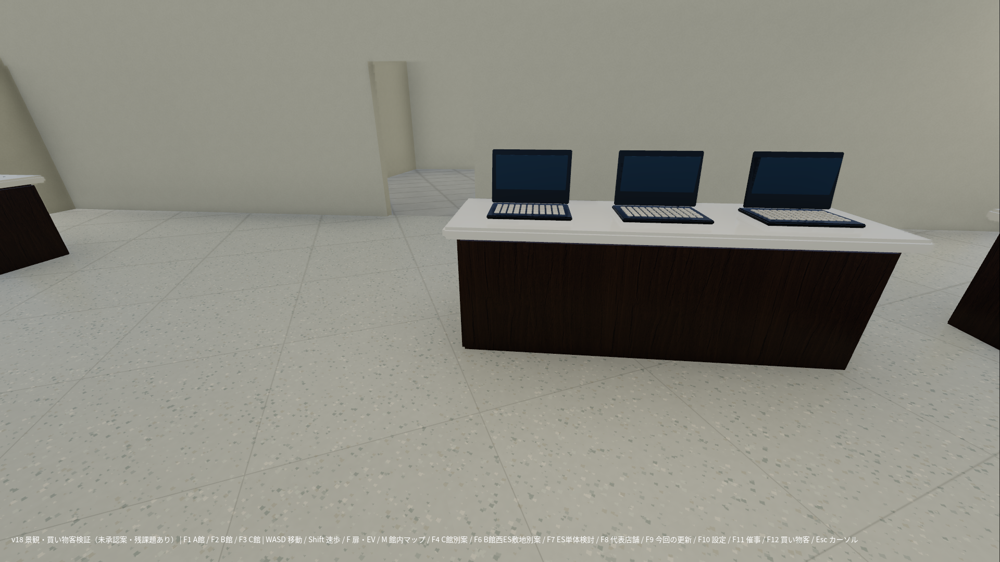
元の売場形状と主動線を維持。内装の全面更新はこの8店が対象です。
実Godot Viewport / 1920×1080 / 同じ視点。スライダー左側がv18。代表店舗の素材確認
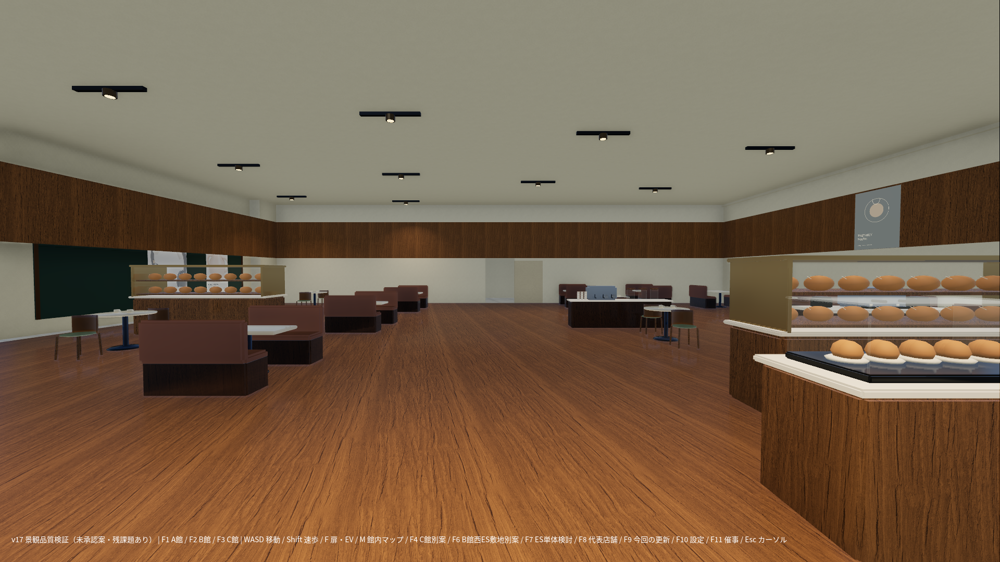
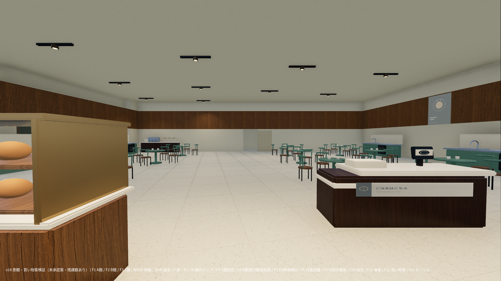
元の売場形状と主動線を維持。内装の全面更新はこの8店が対象です。
実Godot Viewport / 1920×1080 / 同じ視点。スライダー左側がv18。食品専門店 / 地下店舗
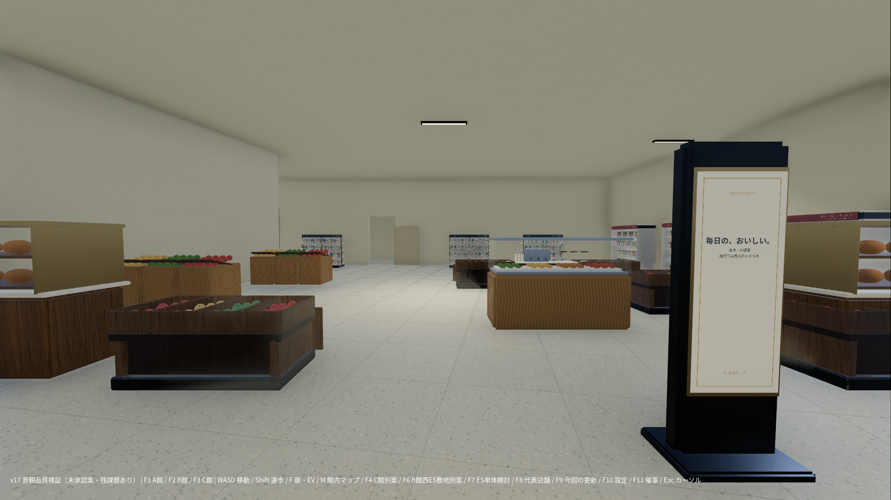

元の売場形状と主動線を維持。内装の全面更新はこの8店が対象です。
実Godot Viewport / 1920×1080 / 同じ視点。スライダー左側がv18。地下食品スーパー / 地下店舗
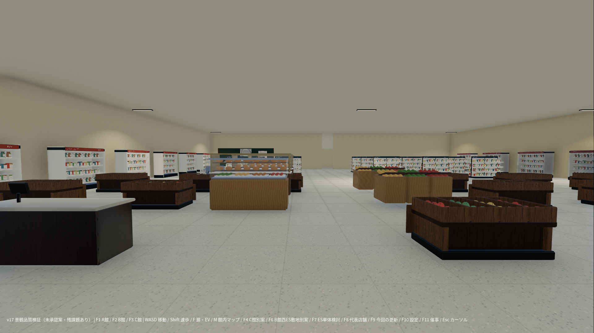
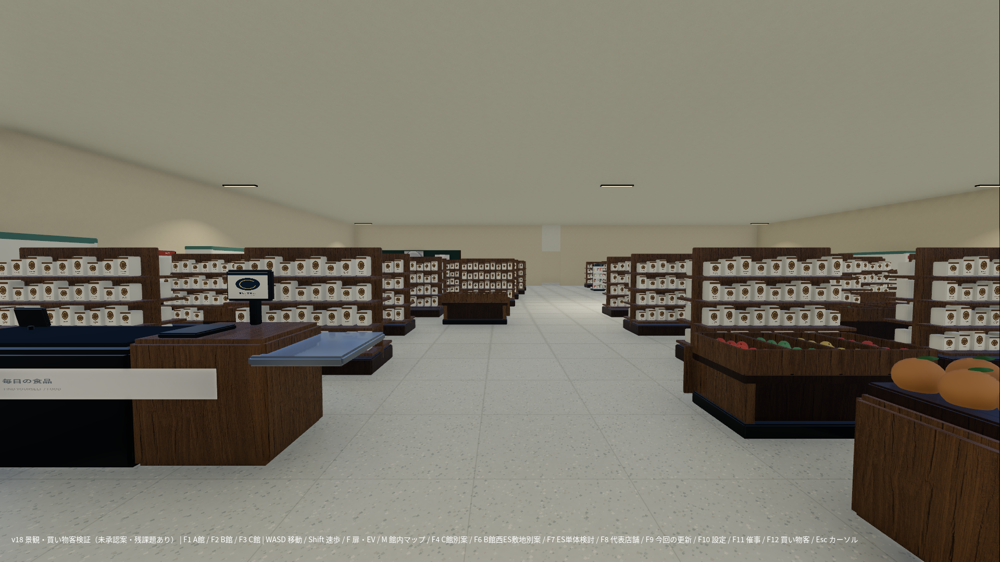
元の売場形状と主動線を維持。内装の全面更新はこの8店が対象です。
実Godot Viewport / 1920×1080 / 同じ視点。スライダー左側がv18。地下・屋上・上階
屋上は局所的な休憩配置にとどまり、広い空白や簡素な建築が残っています。B館3F・RFの景観全域を改善済みとはしていません。
A館RF 植栽と一体の休憩家具
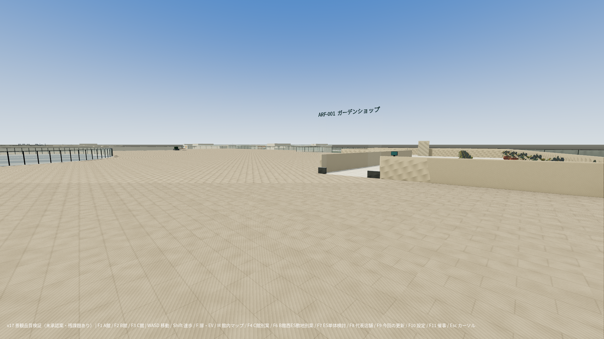

未変更の場所を含む正直な比較です。新規配置と維持範囲は15層一覧を参照。
実Godot Viewport / 1920×1080 / 同じ視点。スライダー左側がv18。屋上カフェ / 屋外席
未変更の場所を含む正直な比較です。新規配置と維持範囲は15層一覧を参照。
実Godot Viewport / 1920×1080 / 同じ視点。スライダー左側がv18。B館屋上前庭 / 休憩テラス
未変更の場所を含む正直な比較です。新規配置と維持範囲は15層一覧を参照。
実Godot Viewport / 1920×1080 / 同じ視点。スライダー左側がv18。B館2F 共用通路
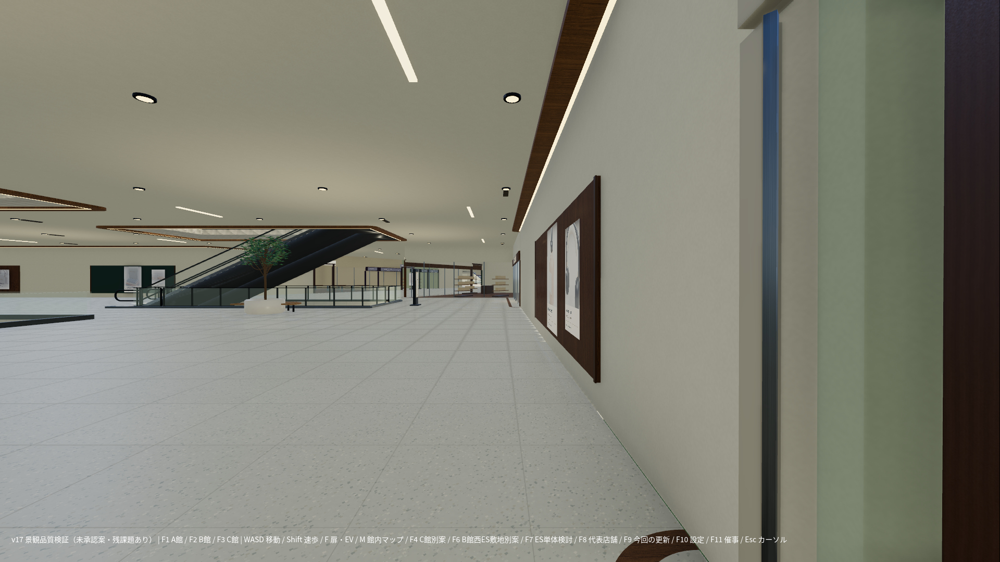
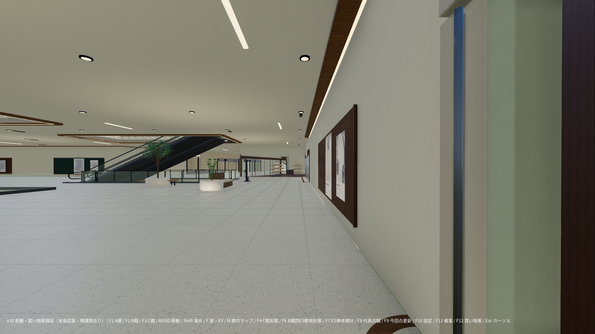
未変更の場所を含む正直な比較です。新規配置と維持範囲は15層一覧を参照。
実Godot Viewport / 1920×1080 / 同じ視点。スライダー左側がv18。B館3F 共用通路
未変更の場所を含む正直な比較です。新規配置と維持範囲は15層一覧を参照。
実Godot Viewport / 1920×1080 / 同じ視点。スライダー左側がv18。15層の実装範囲
| 館・階 | 店舗ID | 新しい休憩配置 | 新内装店舗 | 状態 |
|---|
| A B1 | 31 | 1 | 1 | 局所改善・全域未完成 |
| A 1F | 52 | 1 | 2 | 局所改善・全域未完成 |
| A 2F | 52 | 1 | 0 | 局所改善・全域未完成 |
| A 3F | 51 | 1 | 0 | 局所改善・全域未完成 |
| A RF | 15 | 1 | 0 | 局所改善・全域未完成 |
| B B1 | 2 | 0 | 1 | 局所改善・全域未完成 |
| B 1F | 69 | 1 | 2 | 局所改善・全域未完成 |
| B 2F | 69 | 1 | 0 | 局所改善・全域未完成 |
| B 3F | 60 | 0 | 0 | v17維持・今回追加なし |
| B RF | 1 | 0 | 0 | v17維持・今回追加なし |
| C B1 | 18 | 1 | 0 | 局所改善・全域未完成 |
| C 1F | 18 | 1 | 2 | 局所改善・全域未完成 |
| C 2F | 18 | 0 | 0 | v17維持・今回追加なし |
| C 3F | 18 | 1 | 0 | 局所改善・全域未完成 |
| C RF | 6 | 1 | 0 | 局所改善・全域未完成 |
15層CSV / 代表店舗台帳 / 売場配置図（2D設計データ） / 43人の配置・役割・経路
未承認の構造案
F4・F6は通常版と別シーンのまま維持。F6の中央7.532m候補と左右余裕は実衝突で検証しています。通常版の移設採用ではありません。
C-upper-gallery · 未承認別案
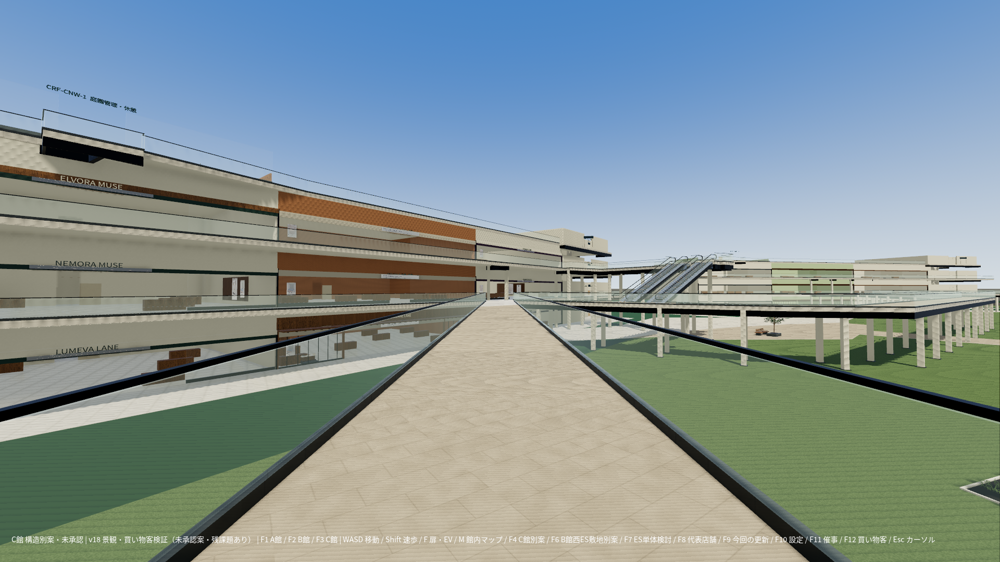
C-yard-open-sky · 未承認別案
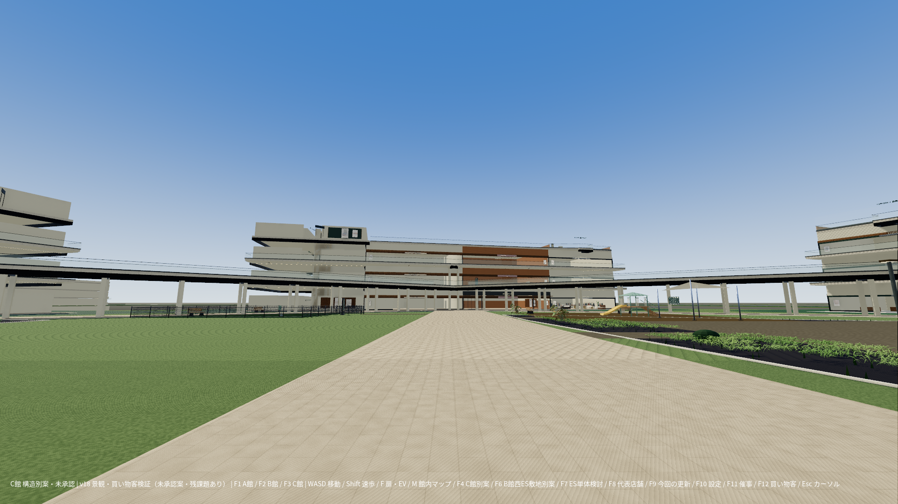
ES-west-site · 未承認別案
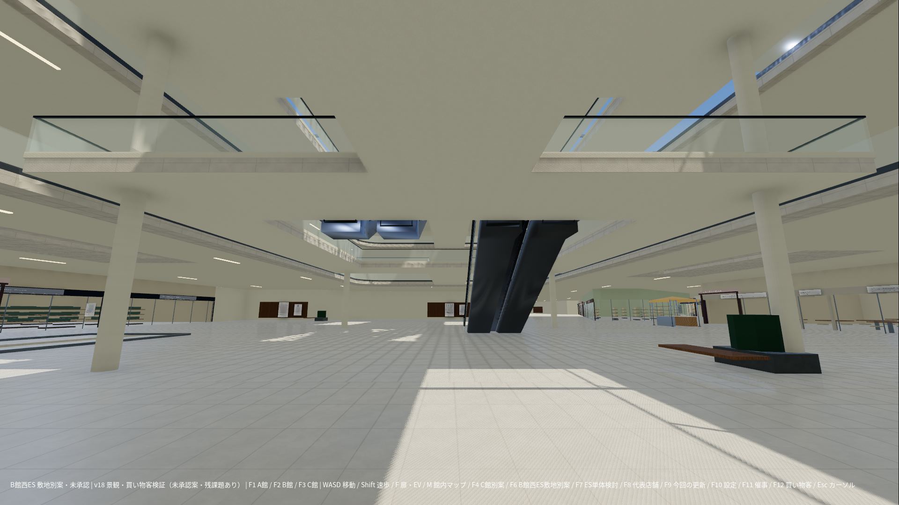
ES-west-upper · 未承認別案
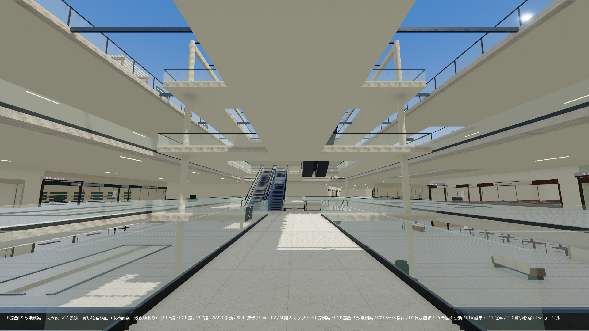
検査結果
2D幾何検査、Godot自動歩行、人間の手動操作は別です。下記は自動検査であり、建築・美術品質の完成判定ではありません。
| 検査 | 通過／実行 | 原結果 |
|---|
| physics-all.json | 945/945 | JSON |
| physics-ES.json | 163/163 | JSON |
| physics-EV.json | 119/119 | JSON |
| v18-interior-physics.json | 40/40 | JSON |
| v18-npc-controls.json | 6/6 | JSON |
| edges-C.json | 22/22 | JSON |
| edges-ES.json | 12/12 | JSON |
| site-physics-C.json | 8/8 | JSON |
| site-physics-ES.json | 18/18 | JSON |
| F6 7.532m candidate / +/-0.35m margins | 6/6 | JSON |
| 43 NPC / 60 simulated seconds | 43/43 | JSON |
| F9 / M / F11 / arrival floors | 30/30 | JSON |
| Display settings save / restore | 31/31 | JSON |
人物の床支持不一致：0。代表店舗の什器配置214件は2Dで売場・共用床包含と保護通路を確認しています。床／壁／ガラスの構造材料は退役対象にしていません。
v17保護データの同一性 / カメラ一致 / 実画面解像度・SHA / F6 7.53m候補と左右余裕
性能観察
Linux Vulkan llvmpipeソフトウェア描画。Windows GPUなし。人物は同一姿勢に固定した描画比較で、移動中の総合ベンチマークではありません。144FPS達成は確認していません。8フレームずつの実行順・キャッシュ・他の検査のCPU負荷を含む観察で、A館のON側が速い値も性能改善と解釈しません。
| 視点 | 人物 | 観察FPS換算 | 中央値フレームms |
|---|
| V16-A-visitor | OFF | 0.14 | 6939.8 |
| V16-A-visitor | ON | 0.16 | 6203.4 |
| V16-B-aichi | OFF | 0.19 | 5209.3 |
| V16-B-aichi | ON | 0.16 | 6372.4 |
| V16-C-courtyard | OFF | 0.54 | 1860.4 |
| V16-C-courtyard | ON | 0.45 | 2209.7 |
8フレーム／条件の生データと描画回数・プリミティブ数未完成・未承認事項
- 全館の景観・全480店舗の内装が完成した版ではありません。代表8店を再構成し、残る472店は従来内装を維持しています。
- 人物は試験用の造形・手続きアニメーションです。服装の形状差、顔・手指・髪の質感、着席時の細かな接触や自然な演技は未完成です。商用品質の人物完成とは扱いません。
- 屋上、遠景の長い壁、白い天井、大きな空白は残っています。屋上の新休憩家具1組を屋上全域の完成とはしていません。
- 食品パッケージや書籍のデザインは反復が多く、棚を越えた売場演出と商品種類は追加制作が必要です。
- NPCは1Fの短い指定経路のみです。EV・ES・階段への乗降は未実装で、経路を機械周辺から離しています。高度な群衆回避や長時間耐久は未検証です。
- C館F4、B館F6、C館水上庭園、RF-SUPPORT-16は未承認。通常版へ統合していません。構造耐力・水盤荷重を実証していません。
- 人間による手動操作、Windows GPUのFPSは未測定です。FF16級の環境品質、144FPS達成を主張しません。
配布ZIPから新規展開したプロジェクトの実画面
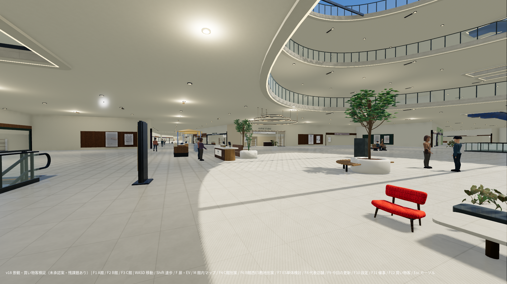
Godot 4.6.3の初回インポート後、外部データなしで自動起動。人間がF5を押した操作検証ではありません。通常・F4・F6の起動結果は 通常 / F4 / F6。